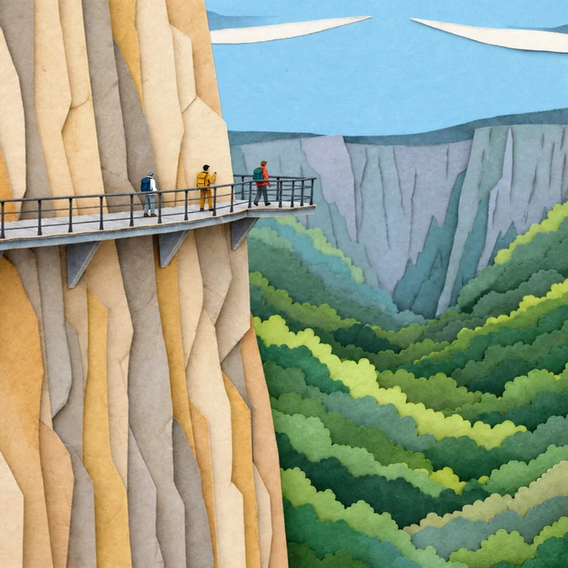

- Martvili from Kutaisi
- 45–51 km
- Okatse hanging trail
- 780 m
- Prometheus Cave route
- 1,420 m, 6 of 22 halls
- Okatse minimum age
- 6
- Emergency
- 112
This page is about Georgia the country, not the US state, and is part of our travel guide. Checked on 19 November 2026.
Martvili Canyon: the trail and the boat
Expect a short walk on a loop path and an optional boat ride on the river. The park puts the site 45 km from Kutaisi, and its overview page says the gorge "used to be a bathing place of Dadiani". The visitor centre is in the village of Inchkhuri.
The trail. According to the park, a "700 meters circular hiking trail starts from the visitors' centre and passes through Dadiani's historic walkway". On the way there are 2 bridges, 3 viewing platforms and a 30-step historic staircase.
Status. The site is a Natural Monument in the IUCN classification of protected areas.

Martvili Canyon boat
The ride covers a 300 m stretch of the Abasha River one way, and you help row. The visitor guide says: "Visitors participate in rowing the boat" and "It is possible to place 6 people in the boat".
Height. A child must be taller than 1 m to board.
Safety vest. Nobody may enter the boat route without one. You must not get out of the boat during the tour.
Weather. "Due to visitors' safety boat tour is not allowed in rainy and snowy weather."
Our tip. Stay seated and keep your hands inside while the boat moves.
Rules on the Martvili trail
Children under 14 may not walk the path alone, and nobody may use it after drinking. The guide's list of things visitors are not allowed to do also includes:
- "Climb, sit and lean upon the banister";
- "Load bridges and viewpoints with more than 10 people at a time".
The park recommends casual clothes and sport shoes.
Okatse Canyon: the hanging trail
Plan 2–3 hours on foot: a forest path, a 780 m hanging trail fixed to the cliff, and a panoramic viewpoint at the end. The park's page places it in the village of Gordi, in Khoni municipality. The path to the hanging section runs through the historic forests of the Dadiani family.
Who can go. The visitor guide is strict: "Children under the age of 6 are not allowed", and the visitor's "height must be more than 1m and 20 sm." Pets are not allowed.
Rain and snow. "Due to visitors' safety walking isn't allowed in rainy and snowy weather."
Fog. The guide lists "Fast movement in case of limited vision" among things not allowed. Our tip: in fog, slow down and keep a hand near the rail.
Shoes and hours. The park asks you to "wear sports shoes". The site is open every day, 10:00–18:00 in spring and summer and 10:00–17:00 in fall and winter. Phone: +995 595 03 60 47.
Nearby. The park's Okatse page lists the Kinchkha waterfall as 5 km away (its "nearby" figure, not a road distance).
Our tip: if you are afraid of heights. Walk the forest part first and see how you feel. On the metal walkway, look at the path ahead rather than down and hold the handrail without leaning on it. Turning back is always fine.

Prometheus Cave (Kumistavi)
The cave is in the village of Kumistavi, Tskaltubo municipality, about 34 km from Kutaisi. The park's page says: "There are 22 halls found, where just 6 halls are open for tourists. It is possible to walk through the length of 1420 meters."
Status. The park's page lists the cave, like the canyon, as a Natural Monument in the IUCN classification.
What you see. Stalactites, stalagmites and what the park calls "hanging waterfalls".
The route. The park describes a "1 hour duration trail" that "passes through 6 majestic halls and ends within boat tour on River Kumistavi".
The underground river boat. According to the visitor guide, "boating is prohibited if the water level rises in the cave".
Guides. "Guide service is in Georgian, English, Russian and German languages."
Our tip: layers and grip. Floors underground can be wet, so wear sports shoes with a good grip. Bring a light layer you can put on or take off: the air in the halls is not the weather outside, and from spring to autumn the route ends on the water (the park lists the cave boat for those seasons).

Planning the day from Kutaisi: distances, hours and Mondays
All three sites fit into one long day by car from Kutaisi, but check Monday opening first. Distances and times below are the park's own figures from its getting-there pages.
| Place | From Kutaisi | Hours (spring–summer / fall–winter) | Mondays |
|---|---|---|---|
| Martvili | 51.1 km, 1 h 8 min | Spring 10:00–18:00, summer 10:00–24:00 (as listed) / fall 10:00–19:00, winter 10:00–18:00 | Pages disagree: call +995 579 80 28 42 |
| Okatse | 53.3 km, 1 h 2 min | 10:00–18:00 / 10:00–17:00 | Every day; +995 595 03 60 47 |
| Prometheus Cave | 34 km, 29 min | 10:00–18:00 / 10:00–17:00 | Pages disagree: call +995 577 10 14 17 |
Mondays. The park's site contradicts itself. The guide pages for the gorge and the cave say "Working days: every day except Mondays", while the opening-hours blocks on the same site say "Everyday". The hanging trail's guide says "every day". If your trip falls on a Monday, call the numbers in the table first.
Summer evenings. The 10:00–24:00 summer hours are quoted as listed on the gorge's overview page. Confirm the boat's last run when you call.
Between the sites. The park's "nearby" list puts the hanging trail about 12 km from the gorge and 11 km from the cave. These look like straight-line figures, not road distances: allow more on the road. The 51.1 km from Kutaisi is on the gorge's getting-there page; its overview page says 45 km.
From Tbilisi. The gorge is about 287 km away (4 h 22 min) and the cave about 258 km (3 h 53 min). To the cave, the park says, there are minibuses from near Didube metro station; see its getting-there page.
Our tip: the order. Start at the hanging trail, the one that shuts in rain and snow. Then go on to the gorge and the boat, and finish at the cave, the closest of the three to Kutaisi.
Prices. We do not quote them; the park lists them on nationalparks.ge.
Sataplia. Another protected site near Kutaisi, it is a separate trip.

Rain, children and other rules that close the trails
Rain or snow stops the canyon boat and closes the hanging trail; high water stops the cave boat. Here are the park's rules in one place:
- Martvili boat: taller than 1 m, a safety vest on, no getting out during the tour, no tour in rain or snow.
- Martvili trail: children under 14 not alone; no alcohol; no more than 10 people on a bridge or viewpoint.
- Okatse: age 6 and over, taller than 1.2 m; closed in rain and snow; no fast movement in fog.
- The cave: no boat if the water level rises.
- All three: sports shoes; all three guides recommend the "112 emergency number".
Our tip for a wet day. The cave walk is underground, so it is the likeliest of the three to work in rain. Call first: high water stops the boat.

Medical help near the canyons
These are rural sites, and serious care is in the cities. Canada's travel advice, last updated 27 August 2026, says: "High-quality medical services and facilities are generally available in major cities, such as Tbilisi and Batumi. In rural areas, there are shortages of medical supplies and personnel." It adds: "First responders may not be able to access rural areas." The UK's safety advice warns that "If you get into trouble during hiking, skiing, adventure travel or extreme sports, the emergency response may be limited."
In an emergency. Dial 112. The UK's health advice for Georgia says: "Dial 112 and ask for an ambulance. Contact your insurance company quickly if you're referred to a medical facility for treatment." Here is how to call an ambulance on 112 and what to say.
Say where you are. Our tip: save the village name before you set off: Inchkhuri for the gorge and the boat, Gordi for the hanging trail, Kumistavi for the cave.
Clinics in Kutaisi. Kutaisi, the region's big city, has the widest choice of clinics nearby. The catalogue of clinics in Kutaisi on 100doc.ge listed 139 clinics when we checked on 19 November 2026.
Your cover. Visitors need health and accident cover for their whole stay of at least 30,000 GEL; see the entry rule on travel insurance.
Hot days. On a summer trip, carry water and read how to stay well on hot days. For roads and crime, see Is Georgia safe?
Frequently asked questions
How long does it take to see each site?
The loop path at the gorge is 700 m; add time for the boat. The Okatse route, with the forest path and the hanging trail, takes 2–3 hours on foot. The cave route takes about 1 hour.
Can you see all three in one day?
Yes, by car, in our view: all three are about an hour or less by car from Kutaisi (29 minutes to 1 hour 8 minutes), and the park lists them as close neighbours (11–12 km apart, not by road). Start early and check Monday opening.
Are they open on Mondays?
Not certain. The park's guide pages say the gorge and the cave close on Mondays, but its hours blocks say "Everyday". Call +995 579 80 28 42 (Martvili) or +995 577 10 14 17 (cave).
Can children go?
Yes, with limits: over 1 m for the boat, age 6 and 1.2 m for the hanging trail. Children under 14 may not walk the loop path in the gorge alone.
What happens if it rains?
The boat does not run and the hanging trail closes in rain or snow. In the cave, the boat stops if the water rises.
How far is it from Tbilisi?
About 287 km to the gorge (4 h 22 min) and 258 km to the cave (3 h 53 min), according to the park.
Where can I find a doctor nearby?
Kutaisi has the widest choice of clinics in the area. For an emergency, dial 112 and ask for an ambulance.
Sources
- National Parks of Georgia: Martvili Canyon, overview and hours
- The same site: visitor guide and rules for the gorge
- The same site: how to get to the gorge
- National Parks of Georgia: the hanging trail, overview and hours
- The same site: hanging trail visitor guide and rules
- The same site: how to get to the hanging trail
- GOV.UK travel advice for Georgia: safety and security (outdoor activities)
- National Parks of Georgia: the cave, overview and hours
- The same site: cave visitor guide and rules
- The same site: how to get to the cave
- Government of Canada: travel advice for Georgia, health
- GOV.UK travel advice for Georgia: health
This guide is general information, not medical advice: the doctor decides on your care.